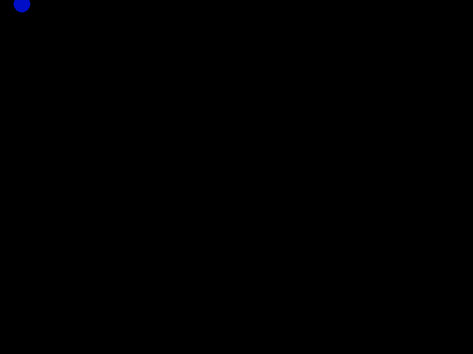
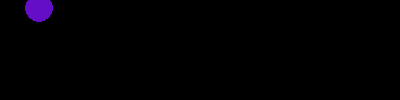
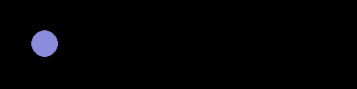
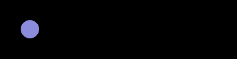

Fysikkmotor
Gjennom dette oppgavearket skal vi lage en fysikkmotor ved å bruke Python og Pygame. Vi kommer omtrentlig til å ha en gjennomgang som følger
- Vektorer
- Hvordan kan vi representerere vektorer i et python-program?
- Partikler
- Kan vi samle flere egenskaper enn bare tall til i én verdi?
- Simulering
- Trinnvis framover i Pygame
- Kollisjoner
- Kan partiklene våre kollidere med hverandre?
- Bugfikser
- Utbedringer kommer til å være nødvendig.
- Utforsking
- Hvilke andre modeller kan vi bruke partiklene våre til?
Motoren kommer til å ta form av en virtuell kasse som det spretter partikler rundt inni. Denne kan vi forhåpentligvis bruke til å gjennomføre ulike modelleringsforsøk.
Vektorer
Introduksjon
Fra matematikken kjenner vi en vektor som noe med størrelse og retning. Ofte illustrerer vi dette med en pil. Under vises vektoren \(\vec{v}\) tegnet som en pil i planet.
Illustrasjon 1 En vektor illustrert som en pil
En vektor avhenger ikke av hvor vi tegner den, kun av dens størrelse og retning, altså vil disse to vektorene være den samme, til tross for at de er «ved siden av hverandre».
Illustrasjon 2 To like vektorer, altså to av den samme vektoren
Dette er altså tilsvarende at tallet 3 er tallet 3, uavhengig av hvor vi møter det.
Før vi kan representere en vektor i et dataprogram, må vi bestemme oss for hvordan vi ønsker å representere vektoren. Vi kan for eksempel se for oss vektoren \(\vec{v}\) som en pil, hvor lengden til \(\vec{v}\), den såkalte absoluttverdien, er \(|\vec{v}| = 3\) og vinkelen mellom \(\vec{v}\) og en horisontalakse er \(\theta = 30^{\circ}\).
Illustrasjon 3 En vektor, dens størrelse og dens retning
Om vi så ønsker å representere dette i et python-program, kan vi for eksempel skrive
absoluttverdi = 3 vinkel = 30
Dette byr på en serie problemer, blant annet at vi nå har to variabler for å holde styr på det som strengt tatt bare er én matematisk størrelse, vektoren \(\vec{v}\).
Om du allerede kjenner til vektorer, stopp opp her og tenk på hvordan du ville representert dem i kode.
Addisjon
Vi er vant til at \(\text{tall} + \text{tall} = \text{tall}\) og at \(\text{tall} \cdot \text{tall} = \text{tall}\).
For vektorer er addisjon som forventet, \(\text{vektor} + \text{vektor} = \text{vektor}\). For å visualisere en vektorsumm, kan vi sette de to vektorleddene etter hverandre. Under vises \(\vec{u}\) og \(\vec{v}\).
Illustrasjon 4 To vektorer
For å legge disse sammen visuelt, kan vi sette de etter hverandre, slik at \(\vec{v}\) starter der \(\vec{u}\) slutter. Summen \(\vec{u} + \vec{v}\) er da en ny vektor som starter der \(\vec{u}\) starter og slutter der \(\vec{v}\) slutter.
Illustrasjon 5 Vektorsum
Essensen her er at summen av to vektorer er en ny vektor.
Om vi har to vektorer representert som to lengder og to vinkler, à la det beskrevet tidligere. Hvordan kan vi gå fram for å finne vektorsummen av disse?
Dekomponering
Vi dekomponerer en vektor ved å skrive den som en sum av vektorer, vi finner dens komponenter. Det vanligste er å la hver av disse komponentene ligge langs en koordinatakse. Under har vi dekomponert \(\vec{v}\) til en vektor i \(x\)-retning, \(\vec{v}_x\) og en vektor i \(y\)-retning, \(\vec{v}_y\).
Illustrasjon 6 Dekomponering
Merk at de to vektorene \(\vec{v}_x\) og \(\vec{v}_y\) er de eneste to vektorene i \(x\)- og \(y\)-retning hvor summen gir \(\vec{v}\), altså er \(\vec{v}\) entydig bestemt av de to vektorene. Om vi da skriver \(|\vec{v}_x| = v_x\) og \(|\vec{v}_y| = v_y\), kan vi samle det hele til \[\vec{v} = \left[v_x, v_y\right].\]
Vi sier at vi nå har skrevet \(\vec{v}\) på koordinatform. For eksempel, dersom vi har \(\vec{v}\) som definert over, vil vi få
\begin{aligned} \vec{v} &= \left[|\vec{v}_x|, |\vec{v}_y|\right] \\ &= \left[|\vec{v}| \cos 30^{\circ}, |\vec{v}| \sin 30^{\circ} \right] \\ &= \left[3\cdot \tfrac{\sqrt{3}}{2}, 3\cdot\tfrac{1}{2} \right] \\ &= \left[\tfrac{3\sqrt{3}}{2}, \tfrac{3}{2} \right]. \end{aligned}Hvordan kan vi representerer vektorer på koordinatform i et program?
Omforming
Vektorer på koordinatform har en annen fin egenskap, summen av to vektorer er den komponentvise summen av leddene. Altså er
\begin{aligned} \vec{u} + \vec{v} &= \left[u_x, u_y\right] + \left[v_x, v_y\right] \\ &= \left[u_x + v_x, u_y + v_y\right]. \end{aligned}Merk at også når vi ønsker å representere vektorer på koordinatform med tall, trenger vi to tall om vektoren er i to dimensjoner (i planet). Det ser ut som at uansett hvordan vi representerer vektorer med tall, trenger vi like mange tall som vi har dimensjoner for vektoren.
Naivt kunne vi tenkt at vi skulle representert vektoren på en form à la
x_koordinat = 2.598 # 3 * cos(30 grader) y_koordinat = 1.500 # 3 * sin(30 grader)
Lag et program som tar inn en vektor med lengde og vinkel, og returnerer en vektor på koordinatform. Du kan for eksempel lage det som en funksjon på formen
def polar_til_koordinat(lengde, vinkel): # dine utregninger return [x_koordinat, y_koordinat]
Legg merke til her at vi har valgt å representere vektoren på koordinatform som en liste. Dette er fordi vi ikke kan ha en funksjon i python som returerner to uavhengige verdier uten at disse pakkes sammen på et vis.
Skriv et program som regner ut summen av de to vektorene under. Kall svaret ditt w.
u = [1, 3] v = [4, 5]
Skriv en funksjon som tar inn en vektor på koordinatform, da som en liste av to verdier, og returnerer en liste med vektorens lengde og vinkel. Du kan kalle funksjonen koordinat_til_polar.
Representasjonsform
Vi har nå sett at det matematisk finnes ulike ekvivalente måter å representere en vektor på, som et sett av lengde og vinkel, som \(x\)- og \(y\)-koordinater, og vi kunne tenkt oss mange flere (de fleste av dem uhensiktsmessige i de fleste tilfeller, som et sett av lengde og en \(x\)-koordinat).
Vi begynner også å ane konturene av at det er uendelig mange måter å representere vektorer i dataprogrammer, som enkeltvariabler, som en liste, og som andre «sammensatte datatyper».
Under oppgaven med vektoraddisjon, så vi dog at listerepresentasjonen, om enn den samler vektoren til ett format, ikke er hensiktsmessig for addisjon. Et bedre alternativ da er å bruke et numpy-array. Vi får dette ved å skrive for eksempel
import numpy as np u = np.array([2.598, 1.500]) # 3 * sin(30 grader)
Forsøk å se hvordan addisjon av vektorer fungerer nå. Start med en vektor u og en vektor v, hver representert som et numpy-array, og test ut addisjon ved å bruke et vanlig +-tegn.
Hva observerer du?
Test det samme om de to vektorene hadde vært lister.
Kommenter svarene dine.
Skalarproduktet
Vi har sett at addisjon fungerer som vi forventer mellom vektorer, en sum av to vektorer er en ny vektor. Hva med multiplikasjon?
Vel. For vektorer operer vi gjerne med to typer multiplikasjon, et såkalt skalarprodukt og et vektorprodukt. Vi noterer det som \(\vec{u}\cdot\vec{v}\) for skalarproduktet og \(\vec{u}\times\vec{v}\). Det overraskende her er at skalarproduktet tar inn to vektorer og gir ut et tall (en skalar), mens vektorproduktet tar inn to vektorer og gir ut en vektor.
Inntil videre er det kun skalarproduktet vi skal ta hensyn til.
På samme måte som at det finnes ulike måter å tenke på vektorer, finnes det ulike måter å tenke på skalarproduktet. En av disse er å si at « \(\vec{u}\cdot\vec{v}\) er lengden av \(\vec{u}\) ganget med lengden av den delen av \(\vec{v}\) som ligger langs \(\vec{u}\)».
«Den delen av \(\vec{v}\) som ligger langs \(\vec{u}\)» er illustert under. Om vi lar \(\vec{u}\) og \(\vec{v}\) starte i samme punkt, og trekker enden av \(\vec{v}\) «loddrett ned på \(\vec{u}\)» får vi delen av \(\vec{v}\) som ligger langs \(\vec{u}\) som \(\vec{v}_u\). Dette er vist under.
Illustrasjon 7 \(\vec{v}_u\) er delen av \(\vec{v}\) som ligger langs \(\vec{u}\)
Lengden av \(\vec{v}_u\) da skrives \(|\vec{v}|\cos\theta\), som enklere vises om vi orienterer oss slik at \(\vec{u}\) ligger langs horisontalaksen.
Illustrasjon 8 Lengden av \(\vec{v}_u\)
Vi sier at vi har funnet projeksjonen av \(\vec{v}\) på \(\vec{u}\), \(\vec{v}_u\).
Kan vi med dette få en intuisjon av hva \(\vec{u}\cdot\vec{v}\) er?
Ja, \(\vec{u}\cdot\vec{v}\) er «lengden av \vec{u} ganget med lengden av \(\vec{v}_u\)». Altså har vi at \(\vec{u}\cdot\vec{v} = |\vec{u}||\vec{v}_u|\).
Lag et program som tar inn to vektorer, \(u\) og \(v\) (du kan bruke de samme som i eksempelet over). Regn ut \(\vec{u}\cdot\vec{v}\) ved å bruke at \[\vec{u}\cdot\vec{v} = |\vec{u}||\vec{v}|\cos \theta,\] hvor \(\theta\) er vinkelen mellom \(\vec{u}\) og \(\vec{v}\).
Om vi har vektorene representert på koordinatform, er det en enkel sak å regne ut skalarproduktet. Vi kan da bruke at
\begin{aligned} \vec{u}\cdot\vec{v} &= \left[u_x, u_y\right]\cdot\left[v_x, v_y\right] \\ &= u_x v_x + u_y v_y \end{aligned}Lag et program som tar inn to vektorer på koordinatform i lister. Regn ut vektorenes skalarprodukt ved å bruke definisjonen over.
Du kan for eksempel ta utgangspunkt i følgende:
u = [-5, 8] v = [-3, 1]
Skalarproduktet oppstår i mange områder av matematikken. I numpy har vi det innebygd som dot-funksjonen. For eksempel vil np.dot(a, b) regne ut skalarproduktet (eller «prikkproduktet» eller «dotproduktet») til de to vektorene a og b.
Lag et program som tar inn to vektorer på koordinatform i numpy-arrayer. Regn ut vektorenes skalarprodukt ved å bruke np.dot.
Du kan for eksempel ta utgangspunkt i følgende:
u = np.array([-5, 8]) v = np.array([-3, 1])
Skalering eller skalarmultiplikasjon
Ordet «skalar» brukes ofte om tall i vektorsammenheng. Bakgrunnen for dette navnet er nettopp at et tall multiplisert med en vektor gir en skalert vektor. Vi kan bruke ordene «skalar» og «tall» om hverandre.
En vektor \(\vec{v}\) skalert med et tall \(t\) er en ny vektor med samme retning som \(\vec{v}\) og lengde \(t|\vec{v}|\).
Illustrasjon 9 Skalerte vektorer
Her er \(0 < a < 1\), \(b > 1\) og \(c < 0\). Vi ser altså at en negativ skalering av en vektor gir en vektor med motsatt retning. For eksemplene i figuren over, er \(|b| = |c|\).
Undersøk om np.dot(t, v) fungerer som forventet dersom t er et tall og v er en vektor i form av et numpy-array.
Partikler
Introduksjon
Vi skal ha partikler sprettende rundt på en skjerm. Vi bør da kunne ha en måte i programmet vårt for å si «dette er en bestemt partikkel». Ideelt sett kunne for eksempel partikkel_1 vist til en partikkel med en posisjon, fart, størrelse, og partikkel_2 det samme.
Illustrasjon 10 To ulike partikler, partikkel_1 og partikkel_2
Her ser vi at det som skiller partikkel_1 og partikkel_2 er deres posisjon, mønster, og størrelse. Vi må altså nok en gang gjøre et valg for hvordan vi skal representere partiklene i kode.
La oss si vi velger å ha posisjon som en liste med \(x\)- og \(y\)-verdier, mønster som en tekststreng (for eksempel "stripete" og "prikkete" og størrelse som et tall. Vi kunne da bestemt oss for at de to partiklene over var definert som
partikkel_1 = [[38.6, 8.6], "stripete", 13.5] partikkel_2 = [[87.3, -12.9], "prikkete", 8.3]
Vi kan da fortelle de som skal bruke programmet at «en partikkel er en liste med tre verdier, den første verdien er en liste med koordinater, den andre en tekststreng som setter mønsteret, den tredje et tall for radiusen».
Lag en partikkel_3, med radius 15.3, senter i origo og rutete mønster.
Python har en annen god datatype for å samle slike egenskaper, såkalte dictionaries eller ordbøker. Dette er en samling med nøkkelord og verdier. Om vi skulle oppgitt partiklene over som ordbøker, ville vi skrevet
partikkel_1 = {"posisjon": [38.6, 8.6], "mønster": "stripete", "radius": 13.5}
Vi skriver altså {} med en samling av nøkkelord: verdi, mellom. Vi kan da hente ut verdier ved å skrive for eksempel partikkel_1["radius"] eller legge til nye verdier ved å skrive partikkel_1["masse"] = 14.
print(partikkel_1["radius"]) partikkel_1["masse"] = 14 print(partikkel_1)
13.5
{'posisjon': [38.6, 8.6], 'mønster': 'stripete', 'radius': 13.5, 'masse': 14}
Lag partikkel_1 og partikkel_2 som over, men gjør posisjonen til et numpy-array, istedenfor lista vi bruker over.
Tegne partikkel
Dette avsnittet forutsetter at du har lagt inn biblioteket pygame. Dette kan du gjøre ved å åpne programmet «Anaconda prompt» og kjøre kommandoen pip install pygame.
Pygame er et bibliotek som egentlig er ment for spill, men vi kan med hell bruke det for å visualisere fysikkmotoren vår òg.
De fleste spill følger en løkke som ser omtrent slikt ut:
- Vi prosesserer data fra brukeren (tastetrykk, musebevegelser, stenge vinduet, osv.)
- Spillmotoren oppdaterer spillet (partikler flyttes, lyder gjøres klare til å spilles av, osv.)
- Et nytt bilde tegnes på skjermen (nye partikkelposisjoner, for eksempel.)
Før dette må vi initialisere hele «spillet».
Illustrasjon 11 Flytskjema for hele «spillet» vårt
«Init» og oppsett
Her skal vi gjøre pygame klart.
import pygame pygame.init() flate = pygame.display.set_mode((800, 600)) # Her kommer vi til å skrive øvrige funksjonsdefinisjoner # og lage variabler til programmet vårt
Vi har nå gjort pygame klart til å bruke et vindu som er 800 piksler bredt, og 600 piksler høyt. Det er dette vinduet vi skal tegne partiklene våre i.
Hovedløkke og prosessere inndata
kjoerer = True while kjoerer: for event in pygame.event.get(): if event.type == pygame.QUIT: kjoerer = False # Her kommer «mainloopen» vår print("Simuleringen er ferdig.") pygame.quit()
Simuleringen er ferdig.
Denne snutten gjør klar en hovedløkke, og vi setter opp et trinn for å prosessere inndata. Pygame håndterer handlinger fra brukeren ved å samle dem som =event=s.
Vi får tak i alle disse hendelsene («event») ved å kalle funksjonen pygame.EVENT.get. Dette gir oss en liste med hendelser. Vi kan så løpe gjennom hver av disse hendelsene (det kan for eksempel være flyttinga av musepekeren, trykking av knapper, osv.).
Dersom du har forsøkt å lukke pygame-vinduet, har en av hendelsene vært av typen pygame.QUIT. Vi sier da at dersom en av hendelsen var pygame.QUIT skal vi ut av hovedløkka, som vi her har valgt å gjøre ved å sette kjoerer til False.
Når vi da har kommet oss helt ut av hovedløkka vår (while kjoerer-blokka), stenger vi pygame ved å kalle quit-funksjonen.
Oppdatere spilldata
Det har ikke skjedd så mye med partiklene våre ennå.
Om vi lager en partikkel som over, med
partikkel = {"posisjon": [38.6, 8.6], "farge": (0, 14, 200), "radius": 14}
kan vi nå late som at vi gjør noe med partikkelens posisjon hver gang gjennom løkka ved for eksempel å skrive
import pygame pygame.init() flate = pygame.display.set_mode((800, 600)) partikkel = {"posisjon": [38.6, 8.6], "farge": (100, 14, 200), # rgb-verdi "radius": 14} kjoerer = True while kjoerer: for event in pygame.event.get(): if event.type == pygame.QUIT: kjoerer = False partikkel["posisjon"] = [38.6, 8.6] # Obs! Denne gjør ikke noe # ! # ! # ! Se under flate.fill((0, 0, 0)) pygame.draw.circle(flate, (214, 77, 238), [38.6, 8.6], 140) pygame.display.flip() print("Simuleringen er ferdig.") pygame.quit()
Simuleringen er ferdig.
Vi har dog fremdeles ikke en partikkel på skjermen. Dette kan vi fikse ved først å tegne en bakgrunn, for så å tegne en sirkel.
Om du erstatter de tre linjene med # ! med de følgende tre linjene, skal du nå få en partikkel opp på skjermen.
flate.fill((0, 0, 0)) # bakgrunn pygame.draw.circle(flate, (0, 14, 200), [38.6, 8.6], 14) # partikkel pygame.display.flip() # sender alt til flaten
Vi kjører koden og får følgende:

Illustrasjon 12 Vår første partikkel
Vi merker oss at posisjonen var i et annet hjørne enn forventet, men lar det være med det inntil videre.
Du har lagt merke til at vi har vært uelegente med hvordan vi henter ut data fra partikkelen vår. Når vi tegner den, skriver vi for eksempel (0, 14, 200) for fargen, istedenfor partikkel["farge"].
Fiks opp i dette slik at de ulike tallene kun står en gang i programmet.
For å sette farge på partikkelen, har vi gitt fargen som en samling av r(ød)-, g(rønn)-, og b(lå)-verdier.
Du kan bruke denne siden til å finne noen farger du liker. Velg ulike farger for partikkelen og bakgrunnen.
Bruk randint-funksjonen fra random-biblioteket til å gi partikkelen tilfeldig posisjon, farge og radius.
Hvordan kan du forsikre deg om at hele partikkelen alltid vises?
Simulering
Introduksjon
Vi skal nå begynne å flytte rundt på partikkelen vår, samtidig som vi ønsker å se endringen på skjermen.
Figuren under viser hvordan partikkelen pt1 har flyttet seg fra en posisjon gitt med vektoren \(\vec{r}_a\) til en posisjon gitt ved \(\vec{r}_b\). Vi ser også noen plasseringer pt1 hadde før den havnet ved \(\vec{r}_a\) og noen plasseringer mellom \(\vec{r}_a\) og \(\vec{r}_b\). Hvordan skal vi få representert dette i programmet vårt?
Illustrasjon 13 En partikkel pt1 ved to ulike tidspunkter
Klokka
I Pygame løser vi dette med en klokke. Under initialiseringa, kan vi opprette en klokke ved å skrive for eksempel klokke = pygame.time.Clock(). Dette er altså en linje hvor vi går inn i modulen time og lager oss en Clock. I resten av programmet vårt har vi nå muligheten til å gjøre ting med variabelen klokke.
Det viktigste vi kommer til å gjøre med klokka er å klikke den framover ved å bruke tick. Dette gjør vi én gang hver runde i hovedløkka vår.
import pygame klokke = pygame.time.Clock() help(klokke.tick)
pygame 2.0.0 (SDL 2.0.12, python 3.8.6)
Hello from the pygame community. https://www.pygame.org/contribute.html
Help on built-in function tick:
tick(...) method of builtins.Clock instance
tick(framerate=0) -> milliseconds
update the clock
tick er altså en funksjon som oppdaterer klokka vår og returnerer et antall millisekunder. Antallet millisekunder er hvor lang tid det er siden sist tick blei brukt.
Kjør følgende kode. Hvilken verdi har dt etter du har kjørt koden?
import pygame klokke = pygame.time.Clock() klokke.tick() # her gir ikke antallet millisekunder siden forrige kall mening # La oss gjøre en utregning trekanttall_nr_million = sum(range(1_000_001)) dt = klokke.tick()
Funksjonen sum(sekvens) brukt over summerer en sekvens, og funksjonen range(n) gir en sekvens \((0, 1, \ldots, n)\).
Trekanttall nr. \(n\) er summen av alle tallene fra \(1\) til \(n\).
Hva gjør programmet i forrige oppgave?
I de fleste tilfeller kommer vi bare til å bruke tick på én linje i programmet, mot slutten av hovedløkka vår. Dersom vi gir tick parameteren framerate, vil Pygame forsøke å begrense hastigheten til programmet vårt slik at det tegner et gitt antall bilder i sekundet. Om vi ønsker 60 bilder i sekunder, skriver vi da klokke.tick(60).
Etter tilpasningene våre fra tidligere, har vi nå et program som ser omtrent slik ut:
import pygame import numpy as np pygame.init() klokke = pygame.time.Clock() flate = pygame.display.set_mode((800, 600)) pt = {"posisjon": np.array([38.6, 8.6]), "farge": (100, 14, 200), # rgb-verdi "radius": 14} kjoerer = True while kjoerer: for event in pygame.event.get(): if event.type == pygame.QUIT: kjoerer = False flate.fill((0, 0, 0)) pygame.draw.circle(flate, pt["farge"], pt["posisjon"], pt["radius"]) pygame.display.flip() klokke.tick(60) print("Simuleringen er ferdig.") pygame.quit()
Legg merke til at vi nå har gjort posisjonen om til et numpy-array og at vi bruker partikkelen pt direkte i tegningen av sirkelen vår.
Skriv av koden over og kontroller at du får samme figur som tidligere.
Dynamikk
I koden under har vi lagt til tre variabler for oppsettet vårt, som vi viser at vi ikke tenker å endre ved å skrive dem med bare store bokstaver, BREDDE, HØYDE, og BAKGRUNNSFARGE.
Det virkelig nye gjør vi dog på linja merket med # <- Obs!
import pygame import numpy as np BREDDE = 800 HØYDE = 600 BAKGRUNNSFARGE = (0, 0, 0) pygame.init() klokke = pygame.time.Clock() flate = pygame.display.set_mode((BREDDE, HØYDE)) pt = {"posisjon": np.array([38.6, 8.6]), "farge": (100, 14, 200), # rgb-verdi "radius": 14} kjoerer = True while kjoerer: for event in pygame.event.get(): if event.type == pygame.QUIT: kjoerer = False pt["posisjon"] = pt["posisjon"] + np.array([1, 0]) # <- Obs! flate.fill(BAKGRUNNSFARGE) pygame.draw.circle(flate, pt["farge"], pt["posisjon"], pt["radius"]) pygame.display.flip() klokke.tick(60) print("Simuleringen er ferdig.") pygame.quit()
Når vi kjører koden får vi et vindu som ser omtrent slik ut, om enn litt større.

Illustrasjon 14 En partikkel som beveger seg
Her flytter vi altså partikkelen litt mellom hvert trykk på klokka. Vi gir partikkelen pt en ny posisjon, ved å bruke at vektorer kan legges sammen som numpy arrayer. Vi får da linja pt["posisjon"] = pt["posisjon"] + np.array([1, 0]). Vi øker altså partikkelens \(x\)-verdi med \(1\) hver gang gjennom hovedløkka.
Forsøk å bruke denne koden med andre verdier for endringen av posisjon, altså ikke np.array([1, 0]).
Klarer du å bruke BREDDE og å snu posisjonsendringen dersom partikkelen er på vei ut av skjermen?
Fart
Vi skal nå gi partiklene våre en ny egenskap, "fart". I samme sleng lager vi også en funksjon som skal hjelpe oss på opprette nye partikler.
Først, farten kommer til å være en ny vektor, som vi så skal skalere med en tidsendring, dt eller \(\Delta t\).
Illustrasjon 15 Farten skalert med \(\Delta t\)
For enklere å kunne lage flere partikler, lager vi så en funksjon lag_partikkel, vi ønsker at den skal oppføre seg omtrent som vist under. Altså, den skal ta inn to vektorer (posisjon og fart), en farge (en samling med r-, g- og b-verdier), et et tall (radius). Funksjonen skal returnere dictionarien som representerer partikkelen vår i programmet.
Illustrasjon 16 En funksjon for å lage partikler
Dersom vi da skriver pt = lag_partikkel(np.array(50, 50), np.array(10, -10), (140, 140, 220), 15) skal vi altså få en partikkel pt med posisjon \((50, 50)\), fart \((10, -10)\), farge \((140, 140, 220)\) og radius 15. Det vil forhåpentligvis se ut omtrent som i figuren under.
Illustrasjon 17 En partikkel fra spesifikasjonen over
Forsøk å skrive en funksjon som oppfyller spesifikasjonen over.
Undersøk hva som skjer om du oppdaterer denne nye partikkelens posisjon med farten, ikke np.array([1, 0]), som vi gjorde tidligere.
Hva ser du?
Om du ikke har fått laget lag_partikkel ennå, skriv inn partikkelen som vi har gjort tidligere.
Vi ser nå at partikkelen fyker ut av skjermen før vi rekker å gjøre noe. Dette er grunnet det at farten er så stor at vi nærmest ikke rekker å se partikkelen.
For å bedre på dette, kan vi tenke på hva slags enheter vi ønsker at skjermen, posisjonen og farten skal representere. Dette avhenger av hva vi ønsker å simulere, og hvor raskt vi ønsker at simuleringen skal gå på skjermen.
La oss sette inn en «hardkodet» tidsendring, \(\Delta t\), som vi gjør liten nok til at hvert skritt framover i simuleringa vår ikke er større enn at vi får en fin animasjon på skjermen.
Ta utgangspunkt i koden under, og endre dt til du er fornøyd med hvordan det ser ut.
import pygame import numpy as np BREDDE = 800 HØYDE = 600 BAKGRUNNSFARGE = (0, 0, 0) pygame.init() klokke = pygame.time.Clock() FLATE = pygame.display.set_mode((BREDDE, HØYDE)) def lag_partikkel(p0, v0, farge, radius): return {"posisjon": p0, "fart": v0, "farge": farge, "radius": radius} def tegn_partikkel(partikkel): pygame.draw.circle(FLATE, partikkel["farge"], partikkel["posisjon"], partikkel["radius"]) pt = lag_partikkel(np.array([50, 50]), np.array([10, -10]), (140, 140, 220), 15) dt = 0.01 kjoerer = True while kjoerer: for event in pygame.event.get(): if event.type == pygame.QUIT: kjoerer = False pt["posisjon"] = pt["posisjon"] + dt * pt["fart"] FLATE.fill(BAKGRUNNSFARGE) tegn_partikkel(pt) # <- Obs! pygame.display.flip() klokke.tick(60) print("Simuleringen er ferdig.") pygame.quit()
Med utgangspunktet over, får vi noe omtrent som figuren under.

Illustrasjon 18 En treig partikkel
Merk, linja med # <- Obs! bruker en tegn_partikkel-funksjon som er definert lengre opp. Dette er gjort for å gjøre det tydeligst mulig hva det er som skjer på hver linje. På denne linja skjer det én ting, vi tegner en partikkel, det er ikke så viktig for oss akkurat hvordan vi gjør det.
En forbedret tegning
Akkurat nå ser partiklene våre litt grovkornede ut. Dette kommer av hvordan pygames draw.circle-funksjon fungerer. Vi kan tegne penere partikler ved å bruke undermodulen pygame.gfxdraw. Under import pygame kan du skrive import pygame.gfxdraw, så skal vi nå endre tegn_partikkel-funksjonen vår.
For å få en penere sirkel, skal vi først tege et glatt omriss, så en fylt sirkel på innsiden. Dette finnes det to funksjoner for i pygame.gfxdraw, aacircle ("aa" står får anti-aliased, som betyr at hakkene er glattet ut) og filled_circle.
Endre så tegn_partikkel-funksjonen ved å legge til disse to funksjonene, som vist under.
def tegn_partikkel(partikkel): posisjonsvektor = partikkel["posisjon"] posisjon_x = posisjonsvektor[0] posisjon_y = posisjonsvektor[1] posisjon_x = int(posisjon_x) posisjon_y = int(posisjon_y) radius = partikkel["radius"] farge = partikkel["farge"] pygame.gfxdraw.aacircle(FLATE, posisjon_x, posisjon_y, radius, farge) pygame.gfxdraw.filled_circle(FLATE, posisjon_x, posisjon_y, radius, farge)
Dette gir oss en partikkel med litt mindre ru overflate.

Legg merke til at gfxdraw.aacircle og filled_circle brukes på en litt annen måte en draw.circle, ved at de tar inn heltallige \(x\)- og \(y\)-posisjoner. Den første delen av koden i funksjonen over kan du gjerne pynte en del på, for eksempel ved å hente ut \(x\)- og \(y\)-verdier samtidig som du bruker int for å gjøre dem til heltall.
Forsøk å gi partikkelen din en tilfeldig posisjon og fart ved å bruke random.randint.
Vi kommer ikke til å endre mer på tegn_partikkel nå. Om du er fornøyd med den forrige utgaven (hvor vi brukte draw.circle), er det helt i orden heller å beholde den.
Partikkel og partikler
Nå lager vi bare én partikkel, med linja pt = lag_partikkel.... Vi ønsker oss en kasse med mange partikler i. Her må vi igjen tenke på hvordan vi skal representere dette i programmet vårt. Det virker uhensiktsmessig å skulle skrive det linje for linje.
pt1 = lag_partikkel... pt2 = lag_partikkel... ... ptn = lag_partikkel...
Det virker mer hensiktsmessig å samle partiklene, på tilsvarende måte vi samlet komponentene for en vektor. Dette er lister egnet til. Om vi ønsker å lage en liste, partikler med ti tilfeldige partikler i, kan vi gjøre det for eksempel som følger:
partikler = [] # en tom partikkelliste for _ in range(10): # følgende kode gjentas ti ganger xpos = randint(0, BREDDE) # tilfeldig x-pos innenfor skjermen ypos = randint(0, HØYDE) # tilfeldig y-pos innenfor skjermen posisjon = np.array([xpos, ypos]) # posisjonsvektor xfart = randint(0, 10) # startfart i x-retning yfart = radnint(0, 10) # startfart i y-retning fart = np.array([xfart, yfart]) radius = randint(10, 20) # tilfeldig radius farge = (140, 140, 220) # denne kan også settes tilfeldig pt = lag_partikkel(posisjon, fart, farge, radius) partikler.append(pt) # legger den nye partikkelen i lista
Etter denne koden har kjørt, er partikler en liste med ti partikler, alle tilfeldig bestemt.
import pygame import pygame.gfxdraw import random as rnd import numpy as np BREDDE = 800 HØYDE = 600 BAKGRUNNSFARGE = (0, 0, 0) dt = 0.1 pygame.init() klokke = pygame.time.Clock() FLATE = pygame.display.set_mode((BREDDE, HØYDE)) def lag_partikkel(p0, v0, farge, radius): return {"posisjon": p0, "fart": v0, "farge": farge, "radius": radius} def tegn_partikkel(partikkel): posisjonsvektor = partikkel["posisjon"] posisjon_x = posisjonsvektor[0] posisjon_y = posisjonsvektor[1] posisjon_x = int(posisjon_x) posisjon_y = int(posisjon_y) radius = partikkel["radius"] farge = partikkel["farge"] pygame.gfxdraw.aacircle(FLATE, posisjon_x, posisjon_y, radius, farge) pygame.gfxdraw.filled_circle(FLATE, posisjon_x, posisjon_y, radius, farge) partikler = [] for _ in range(10): xpos = rnd.randint(0, BREDDE) ypos = rnd.randint(0, HØYDE) posisjon = np.array([xpos, ypos]) xfart = rnd.randint(0, 10) yfart = rnd.randint(0, 10) fart = np.array([xfart, yfart]) radius = rnd.randint(10, 20) farge = (140, 140, 220) pt = lag_partikkel(posisjon, fart, farge, radius) partikler.append(pt) kjoerer = True while kjoerer: for event in pygame.event.get(): if event.type == pygame.QUIT: kjoerer = False for pt in partikler: pt["posisjon"] = pt["posisjon"] + dt * pt["fart"] FLATE.fill(BAKGRUNNSFARGE) for pt in partikler: tegn_partikkel(pt) pygame.display.flip() klokke.tick(60) print("Simuleringen er ferdig.") pygame.quit()
Merk deg at vi nå løper gjennom en liste med partikler både når vi vil tegne partiklene, og når vi vil oppdatere partiklenes posisjon.
Fiks programmet slik at ikke alle partiklene beveger seg nedover mot høyre.
Hvis vi ønsker oss at \(y\)-aksen skal være positiv oppover, istedenfor nedover som det er nå, kan vi, om vi ønsker, fikse det i tegn_partikkel-funksjonen vår.
Har du et forslag til hvordan vi kan gjøre det?